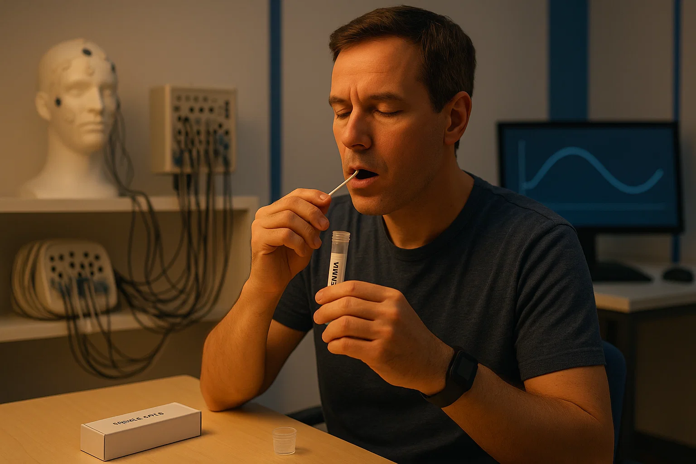
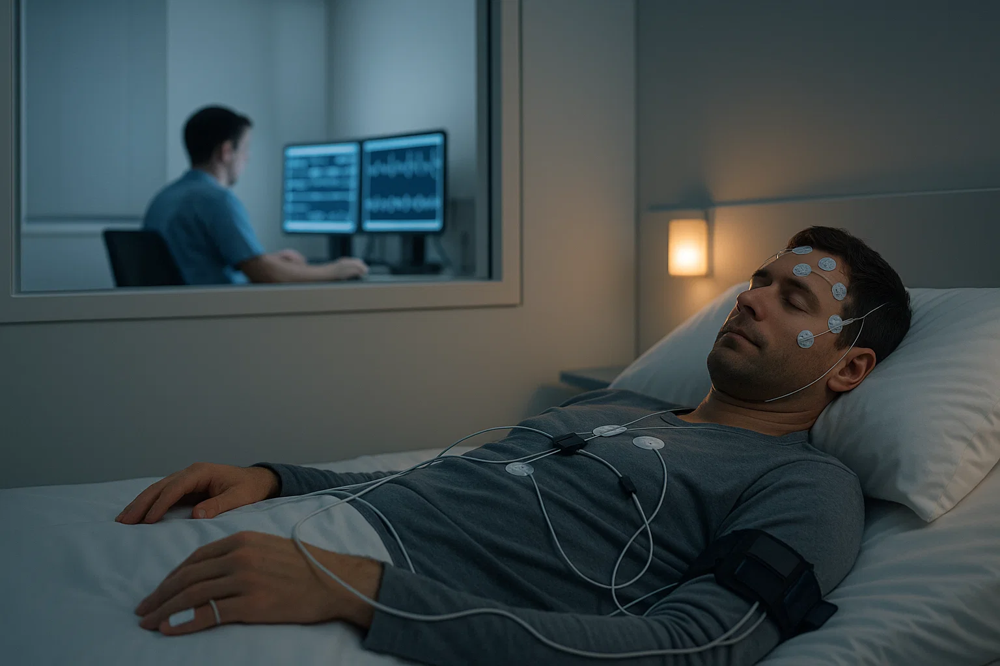

Lepší zdraví díky načasování
Jsme první klinika v ČR zaměřená na cirkadiánní medicínu. Pomáháme pacientům se spánkem, prací na směny, jet-lagem i s chronoterapií – načasováním léčby a medikace.
Jsme první klinika v ČR zaměřená na cirkadiánní medicínu. Pomáháme pacientům se spánkem, prací na směny, jet-lagem i s chronoterapií – načasováním léčby a medikace.
Diagnostika světelné expozice (actigrafie), návrh světelné hygieny a personalizované protokoly.

Zmapujeme váš spánkový rytmus a kvalitu spánku včetně biologické noci. Nabízíme DLMO (slinný melatonin ve večerním tlumeném světle), polygrafii/polysomnografii, actigrafii z hodinek a MCTQ se spánkovým deníkem. Z výsledků získáte srozumitelnou zprávu a doporučení: jak nastavit světlo, spánkové okno, pohyb i okna pro jídlo/kofein. Pokud je potřeba posun režimu, připravíme protokol a kontrolu po 3–4 týdnech.
Migréna často souvisí s rozhozeným denním rytmem. V rámci chronoterapie nastavíme stabilní spánkové okno, vhodné časy světla, jídla a kofeinu a – po dohodě s vaším neurologem – i načasování léčby. Dostanete jednoduchý 4–6týdenní plán a krátkou kontrolu, kde úpravy doladíme.
Program pro zdravotníky, hasiče a IT – jak minimalizovat dopady práce v noci.
Program dostupný
Připavíme osobní plán dle směru letu a počtu pásem. Před odletem postupně posuneme spánek a světlo, určíme časy ranní/večerní expozice, kofeinu a dle indikace i melatoninu, včetně krátkých power-naps. Dostanete den-po-dni itinerář (odlet, první dny po příletu, návrat) a „short-stay“ režim pro velmi krátké cesty.
Některé léky působí lépe či jsou lépe tolerované v určitou denní dobu. Podle vašeho chronotypu, režimu (včetně směn), jídelních návyků a současné léčby připravíme časový plán dávkování pro běžné dny i víkendy. Sladíme jej se světlem, spánkem a aktivitou, abychom snížili kolísání účinku a NÚ. Plán vždy ladíme s předepisujícím lékařem; dostanete přehlednou kartičku s ikonami a následnou kontrolu.
Prohlédněte si kompletní nabídku vyšetření, testů a programů.
Přejít na seznam →On‑line rezervace krok za krokem – vyberte službu, termín a potvrďte.
Objednat se →Adresa, mapka, MHD a parkování. Vše potřebné na jednom místě.
Kontakt →